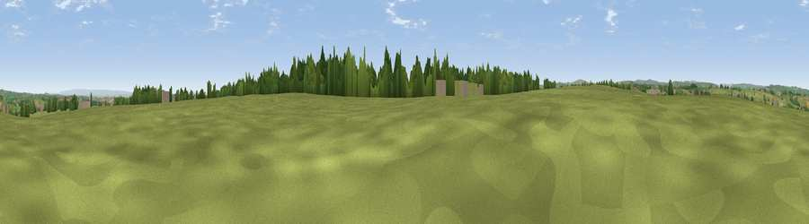

Knabbs Ridge
#25984 in England · top 51% of its area beats it · near BirstwithThe view, rendered

A 360° render of this exact spot computed from the terrain model, tree cover and land cover — summer colours, afternoon light, calibrated against photographs of famous viewpoints. Real trees, hedges and buildings will differ in detail.
The panorama
Grey silhouette: terrain skyline in each direction (720 bearings, Earth curvature and refraction included). Dashed green: skyline with trees (+15 m) and buildings (+8 m) as obstacles. Blue strip: how far the ground is visible on each bearing.
Where the view opens
Wedge length = distance to the farthest visible ground on that bearing (vegetation-aware). Rings at 10, 25 and 50 km.
What fills the view
83% grassland · 9% woodland · 7% cropland · 1% built-up
Angular shares of the visible panorama (visual magnitude), not map area. Landscape diversity 0.27 (0–1 Shannon).
Key numbers
More beautiful places nearby
The staircase of upgrades: each row has a higher view potential than everything closer. Driving times are estimates from straight-line distance, calibrated against real road routing — check an actual route before setting out.
| Place | Direction | Drive | Score |
|---|---|---|---|
| Viewpoint near Darley | NNW · 3 km | ~7 min | 52.3 |
| Viewpoint near Hampsthwaite | ENE · 3 km | ~8 min | 54.2 |
| Viewpoint near Timble | SSW · 5 km | ~11 min | 68.1 |
| Viewpoint near Timble | SW · 5 km | ~12 min | 68.3 |
| How Hill | NNE · 12 km | ~22 min | 72.9 |
| Viewpoint near Otley | SSW · 12 km | ~23 min | 77.5 |
| Viewpoint near East Witton | NNW · 31 km | ~48 min | 77.8 |
| Hood Hill | NE · 37 km | ~56 min | 79.6 |
53.99820, -1.64445 · source: osm peak · position refined by local search. Computed location — check access rights before visiting.